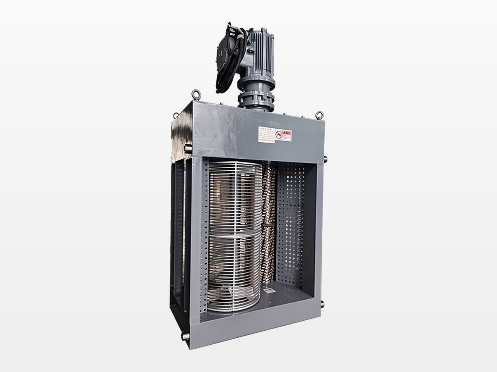
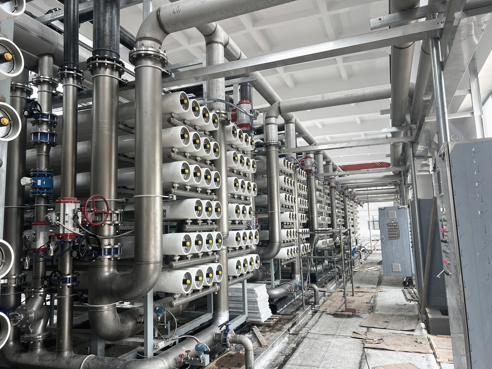
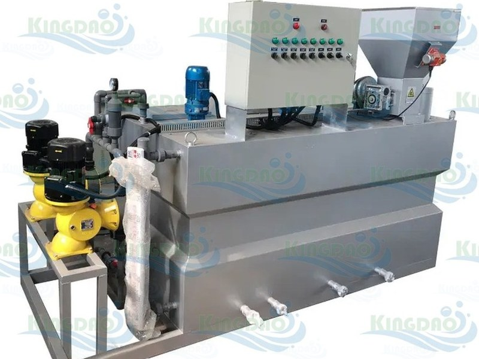

KINGDAO TECH is a water treatment equipment manufacturer and process design house in Yixing, Jiangsu, China. One technical partner from process route to start-up report — for EPC contractors, system integrators and industrial park owners across Southeast Asia.
Process design and technical consulting, from 250 m³/d industrial packages to 50,000 m³/d municipal plants. Client names and capacities are public; contract values are not.
Domestic sewage for the zone. Effluent CODcr held below 80 mg/L. Designed to Cambodian Ministry of Environment discharge standards.
Chrome, high salinity and high sulphide load. Combined A+B oxidation ditch process, with separate chrome and sulphide pre-treatment.
High colour, high salinity, PVA desizing and alkali weight-reduction water. 50% reuse, 70% achievable with the full train.
Our core lines are built in our own plant in Yixing — screw presses, crushing grilles, dosing systems, screens, mixers and aerators. Across the wider catalogue we supply equipment produced to our drawings and specification, so a project can be sourced from one technical partner instead of five suppliers. Motors and reducers from established international brands throughout; supplied OEM under your own brand or neutral.

Sludge dewatering. 14 models, 6–135 m³/h by solids load. Our core line.

Inline and open-channel macerators. 4 series, 75 models, DN50–DN400.

Tubular, hollow-fibre, curtain and disc-tube modules — ultrafiltration, MBR and high-strength leachate duty.

PAC and polymer preparation, fully automatic or semi-automatic, with metering pumps.

Raked screening for coarse and fine duty; automatic, level-triggered cleaning.

Sewage, sludge and clean-water pumps with cutter options for fibrous load.
View all 25 equipment lines →We have designed plants for these industries — which is why we can talk about your effluent before we talk about a machine.
Our role is to add capacity behind yours: the equipment you do not build, the process design your team can lean on, and commissioning support at the far end.
Our own plant in Yixing since 2005. You can visit, audit, and see the machine running before it ships.
18 industries, capacities from 250 to 50,000 m³/d. Mass balance, P&ID and GA drawings come from us, not from a third party.
Start-up, sludge seeding, optimisation and operator training until the Ministry of Environment test is passed.
Screw shafts, rings, bearings and drive units from the manufacturer that built the machine — not from a reseller.
Send us your flow rate, the type of wastewater and the discharge standard. You will get a technical reply, not a sales brochure.